Introduction
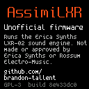
AssimiLXR replaces the Assimil8or’s sample player with the sound engine of the Erica Synths LXR-02 drum synthesizer. Each of the eight channels becomes an LXR voice with its own sound, on its own output.
The sounds, their parameters and the effects are the LXR-02’s. This guide covers what’s different: how they’re reached from the Assimil8or’s panel and what AssimiLXR adds. For what each parameter does, see the LXR-02 manual.
Note This is an independent project. It is not made, tested or supported by Erica Synths or Rossum Electro-Music. Report problems and ask questions at github.com/brandon-tallent/assimilxr/issues.
What You’ll Need
- An Assimil8or.
- Your micro SD card.
- The AssimiLXR app file from github.com/brandon-tallent/assimilxr/releases.
- Optional: LXR-02 kits (.snd files) from an LXR-02 card, or the Factory SD content and Sound Packs 1 and 2 from Erica Synths’ LXR-02 page.
Installation
- Copy app to the root level of your micro SD card, and insert the card into the front panel slot.
- Select Utilities > Load Software and click the encoder. Click the encoder again as instructed.
- When you see the success message, turn the encoder and then click it to restart.
- The AssimiLXR start-up screen appears, then the channel overview. Press any button to skip the start-up screen.
On its first start, AssimiLXR keeps a copy of the Rossum software it replaced, and creates an AssimiLXR folder on the card for your kits.
Going Back
Select Utilities > Firmware > Stock firmware and click the encoder twice. The Rossum software AssimiLXR replaced is put back and the module restarts. Nothing needs to be downloaded. To return to AssimiLXR, leave its app on the card and use Utilities > Load Software again.
Your Assimil8or presets and samples are not touched by AssimiLXR.
Overview
Coming from the LXR-02
- Eight channels
- Eight voices instead of seven, each with its own sound. Any channel can be any voice type (Drum, Snare, Cymbal, Hi-hat or open Hi-hat), so a kit can have four kicks.
- Eight outputs
- Every channel has its own output. The mix outputs carry the stereo mix with the FX bus.
- Reverb
- The FX bus has the reverb that the LXR-02 firmware leaves out, in stereo.
- CV control
- Any sound parameter can follow any of the 24 CV inputs. Each channel has a gate input, and can take 1V/oct pitch and accent from CV.
- Audio inputs
- External audio from the Sample inputs can go through the FX bus.
- Your own waveforms
- Single-cycle waveforms and transients from the card, as the original LXR had.
- Kits
- LXR-02 kits load as they are. AssimiLXR kits hold all eight channels, and a channel saves back to an LXR-02 kit.
- Units
- Pitches and cutoffs are shown in Hz, fine tune in cents, envelope times in ms and pan as L, C or R.
- No sequencer
- AssimiLXR is a sound module. Play it from a sequencer by MIDI or gates.
Coming from the Assimil8or
- No samples
- Channels play synthesized LXR voices, not samples. Presets, zones and sampling don’t apply.
- Play Mode
- 1 Shot and Gated, with the same button and LEDs.
- Same navigation
- Buttons open one page each, the encoder moves and edits, and pressing a page’s button again shows its CV settings.
- Familiar CV
- As on the Assimil8or, a parameter takes CV from its own channel’s A, B or C input, or from any other channel’s.
- Kits instead of presets
- Load and Save work with kits in the AssimiLXR folder.
- Kit CV
- As with Inc/Dec Preset CV, triggers step to the next or previous kit or back to the first, and a voltage can pick the kit. The change is near instant: the kits are read ahead.
The Panel
| 1–8 | Select a channel and play it. |
|---|---|
| Channels | All eight channels, with their levels and kit browsing. |
| Pitch | Oscillator |
| Envelope | Amp envelope |
| Play Mode | The selected channel between 1 Shot and Gated |
| Phase Mod | FM |
| Sample Start | Transient |
| Sample End | Filter |
| Loop Start | Modulation: pitch envelope and velocity |
| Loop Mode | LFO |
| Level | Mix: level, pan, sample rate, drive, output |
| Pan/Mix | The mixer; again for the FX bus |
| Sample | The channel’s voice type |
| Sampling Setup | The channel’s pitch and accent inputs |
| Zones | Morph |
| Mutate | Mutate |
| Load, Save | Kits |
| Utilities | MIDI, audio inputs, waveforms, display, CV monitor, About, firmware |
The row of numbers at the bottom of every page shows the channels. The selected channel is highlighted, a channel lights while it sounds, and a dim number is a channel with no voice.
In Detail
Channels
Press Channels for an overview of all eight channels: each one’s voice and a level meter.
The loaded kit’s name shows at the top. Turn the encoder to browse kits: the kit, its folder and its place there show large. Click the encoder to load it into every channel.
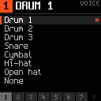
At start the channels are Drum 1, Snare, Hi-hat, Drum 2, Drum 3, Cymbal and Open hat, with channel 8 empty.
To change a channel’s voice, press Sample, turn to a voice type and click. The current one is marked. None leaves the channel silent.
A hi-hat on one channel cuts off an open hi-hat ringing on any other, as on the LXR-02.
Voice Pages
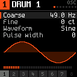
Eight buttons (see The Panel) open the sections of the selected channel’s voice, in the LXR-02’s order. The dots at the top right show which section is open.
The parameters, their ranges and their meaning are the LXR-02’s. Some show units: the oscillator’s pitch in Hz (with its fine tune), fine tune in cents, filter cutoff in Hz, attack and decay in ms, LFO rate in Hz and pan as L, C or R.
Below the parameters, the Oscillator page draws the waveform, the Amp page the envelope with its total length, and the Filter page the filter’s response.
A section a voice doesn’t have (the snare has no FM) says so.
1 Shot and Gated
As on the Assimil8or, Play Mode switches the selected channel between two play modes, and its two LEDs show which the channel is in:
- 1 Shot (the default): a hit plays out its whole envelope, as on the LXR-02.
- Gated: the sound fades out (over about 5 ms) when the channel’s gate input goes low, its MIDI note ends, or you let go of its channel button. Hold the gate for a long hit, cut it short for a choked one.
The play mode is saved in AssimiLXR kits.
Editing a Value
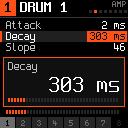
Turn the encoder to highlight a parameter. Click to edit it: the value shows large, with its position in the range. Turn to change it and click again when you’re done.
Hold the encoder down while turning to move in steps of 1/16 of the range. DATA 2 sets the highlighted value directly.
CV Routes
Every sound parameter can follow a CV input. Press a section’s button again to see its CV page: each parameter shows its input and amount, or -- for none.
Highlight a parameter and click to choose the input. A, B and C are the selected channel’s own inputs; 1A to 8C are any channel’s. The input’s voltage shows at the top right.
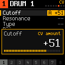
Click again to set the amount, from −100 to +100, and click once more to finish. Hold the encoder down while turning to move in steps of 10.
CV is bipolar. The inputs read −5 V to +5 V, and +5 V moves the parameter up by the amount’s share of its range; −5 V moves it down as far. With an amount of +50, +5 V moves a 0–127 parameter up by 63.
On the ordinary page, a parameter with a CV route has an amber mark beside its name. The FX bus parameters are shared by all channels, so their routes are too.
Gates, Pitch and Accent
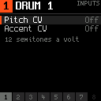
A rising edge at a channel’s gate input plays it.
Press Sampling Setup to give the channel a pitch input and an accent input, each one of its own A, B or C:
- Pitch CV transposes the voice by 12 semitones a volt, so it can be played from a 1V/oct sequencer.
- Accent CV sets the velocity of each gate: 0 V is the softest, 5 V the hardest.
Mixer
Press Pan/Mix for the mixer. Each channel has a strip: level, pan, FX send and mute, top to bottom.
Press a channel button to pick its strip and turn the encoder to pick the field; its name and value show at the top. Click to edit it, or to switch the mute.
The FX send feeds the channel to the FX bus while it stays on its own output and in the mix.
Each channel’s own output always carries it. The Output setting on the Mix page (Level) decides how it reaches the mix outputs: Stereo 1 and Stereo 2 by its pan, Left or Right on one side only, or FX bus through the FX bus alone.
FX Bus
Press Pan/Mix a second time for the FX bus: the LXR-02’s distortion, ring modulator, compressor and delay, and the reverb. The reverb’s tail is stereo.
Sounds reach the bus by a channel’s FX send, by a voice’s Output set to FX bus, and from the Sample inputs (see Audio inputs).
Kits
Press Load to browse the AssimiLXR folder on the card and its folders. Turn to a kit and click to load it. The top right says where it goes:
- ALL: from the Channels page or the mixer, a kit loads into every channel.
- CH n: from any other page, it loads into the selected channel.
An LXR-02 kit (.snd) gives each channel the sound of its voice type, and leaves the voice types as they are. An AssimiLXR kit (.kit) sets everything: each channel’s voice and sound, mute, FX send, play mode, CV routes and morph kit, and the morph amount.
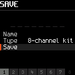
Press Save to save. Highlight Name and click to name the kit: turn for each character and click for the next. Names have up to 8 characters, as on the LXR-02.
Type chooses an 8-channel kit (NAME.kit, all eight channels) or an LXR .snd: the selected channel as an LXR-02 kit, which an LXR-02 loads. Highlight Save and click.
A kit of the same name is replaced. With no name, the kit is numbered.
Morph
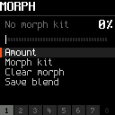
Morph works as on the LXR-02: each channel can hold a second kit, and Amount blends every parameter between the two. Press Zones for the Morph page.
- Morph kit opens the kit browser. The kit you choose becomes the morph kit of every channel.
- Clear morph removes the morph kits.
- Save blend saves the sound you hear as a new kit.
Press Zones again to give the amount a CV route. DATA 2 and MIDI (NRPN 120, as on the LXR-02) set it too.
Mutate
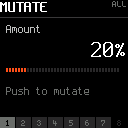
Press Mutate, set the amount and click the encoder: every sound parameter of the voice moves by a random step of up to that share of its range. Level, pan and the other Mix settings stay as they are. Click again for another variation.
From the Channels page or the mixer, Mutate works on all eight channels and says ALL; from anywhere else, on the selected channel.
Changing Kits from CV
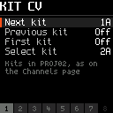
Kits can change from CV, as presets do on the Assimil8or with Inc/Dec Preset CV. Select Utilities > Kit CV and give any of these an input, from 1A to 8C:
- Next kit and Previous kit step one kit on each trigger. They stop at the last and first kit.
- First kit goes back to the first kit.
- Select kit picks the kit by voltage: 0 to 5 V is shared evenly among the kits.
A trigger fires above 1.7 V and is ready again below 1.5 V, as on the Assimil8or. The kits are the ones the Channels page steps through: those in the folder you last loaded a kit from with Load. That folder is remembered when the module restarts.
The folder’s kits (up to 64) are read into memory when Kit CV is first used and whenever the folder changes, so a change from CV doesn’t wait for the card. All eight channels have their new sounds within about 3 ms. A gate that arrives in the same moment may play part of the old kit.
Your Own Waveforms
Like the original LXR, AssimiLXR plays waveforms from the card:
- WAV files in AssimiLXR/osc are single cycles. They appear after the built-in waveforms in every oscillator’s Waveform list.
- WAV files in AssimiLXR/transients are one-shots of up to 2 seconds. They appear after the built-in transients.
Each folder gives up to 16, in name order, as 16, 24 or 32-bit PCM or 32-bit float, mono or stereo. They load at start, and again with Utilities > Reload waves after you change the card.
MIDI
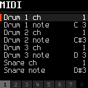
MIDI follows the LXR-02’s implementation: a MIDI channel and note for each voice, the same controller and NRPN numbers, and a global channel that plays the selected channel. A voice’s note plays every channel set to that voice. These settings are on Utilities > MIDI.
Controllers 120 (All Sound Off) and 123 (All Notes Off) end every held note, gate and button instead of setting LFO 5 rate and LFO 2 amount.
Velocity, at the top of the list, sets how MIDI velocity changes the volume. Kit (the default) follows each channel’s Velocity level in its kit; Global applies velocity to every channel. It is saved on the card.
Two more channels, at the end of the list, are AssimiLXR’s own:
- Chroma 8 channel (16 by default) works like the Assimil8or’s Chroma 8 assignment: each block of eight keys from note 36 plays one channel, the fifth key at the kit’s tuning and the others transposed.
- GM drum channel (10 by default) plays General MIDI drum notes on the first channel with that voice.
MIDI clock sets the tempo that synced LFOs and the delay follow. Without it the tempo is 120 BPM. Utilities > About shows the tempo.
Utilities
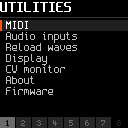
- MIDI
- The MIDI settings above.
- Kit CV
- Inputs that change the kit (see Changing Kits from CV).
- Audio inputs
- How much of the Sample inputs goes to the FX bus and straight to the mix, with their levels.
- Reload waves
- Reads your waveforms from the card again.
- Display
- The display’s brightness.
- CV monitor
- All 24 CV inputs in volts, and the gates.
- About
- The build and the tempo.
- Firmware
- Switching back to the Rossum software, or loading a new AssimiLXR.
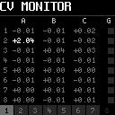
The CV monitor shows each channel’s A, B and C inputs in volts, and its gate (G). Readings within 0.05 V of zero are gray.
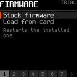
Stock firmware puts back the Rossum software AssimiLXR replaced, and restarts. Load from card installs an app file from the card, such as a newer AssimiLXR, after checking it. Each asks for a second click.
If an installed AssimiLXR stops for 20 seconds, at start-up or while playing, the module puts the Rossum software back by itself and restarts. To return to AssimiLXR, use Utilities > Load Software again.
Files
AssimiLXR keeps everything on the front card in its AssimiLXR folder. It doesn’t change your Assimil8or presets, samples or other folders, and switching between AssimiLXR and the Rossum software converts or deletes nothing.
Front card
| AssimiLXR/ | Your kits, in any folders you like |
|---|---|
| AssimiLXR/osc/ | Single-cycle waveforms |
| AssimiLXR/transients/ | Transients |
| AssimiLXR/glo.cfg | The voice MIDI channels and notes, as the LXR-02 keeps them; an LXR-02’s file can be copied in |
| AssimiLXR/AssimiLXR.cfg | The Chroma 8 and GM drum channels, Velocity, display, audio input and Kit CV settings, and the kit folder |
LXR-02 kits can be copied into AssimiLXR straight from an LXR-02 card, folders and all.
System card
The module’s internal card holds the firmware:
| app | The firmware the module starts |
|---|---|
| appold | The one before it. Load Software and Load from card move app here. |
| appstock | The Rossum software, copied on AssimiLXR’s first start and never changed. Stock firmware puts it back. |
Support
Everything about the sounds works as described in the LXR-02 manual.